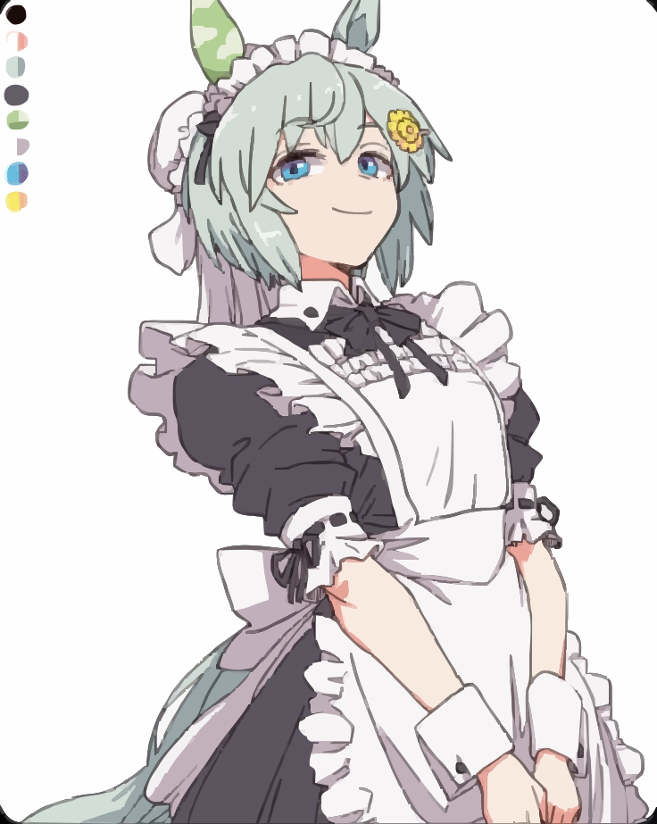

Local AI & Agentic Systems
- Local AI Installation (Bionic AI GUI based on
llama.cpp) - Local AI as Agentic AI (Bionic AI with tweaks, MCP Server & contextual skills)
- Local AI integration into VS Code (Bionic AI local API connection)
Information System undergraduate | Cybersecurity, Local AI and Basic Mechanical Vehicle's Motor
Undergraduate Information Systems student, passionate about cybersecurity, local AI, and basic mechanical vehicle maintenance.

Seorang mahasiswa Sistem Informasi yang memiliki minat mendalam terhadap Cybersecurity, keamanan data pribadi, penggunaan internet yang aman, serta perlindungan data dari risiko eksploitasi. Selain itu, aktif mengeksplorasi konsep AI yang berjalan secara lokal (Local AI) pada PC agar mampu bekerja layaknya AI berbasis cloud—seperti integrasi fitur melalui MCP Server dan pemanggilan Skills yang relevan dengan konteks percakapan saat itu.
Selain itu, memiliki ketertarikan pada desain UX yang memikirkan pengalaman pengguna secara keseluruhan. Ketertarikan terhadap UX ini dituangkan dalam berbagai aktivitas desain yang fokus pada pengguna, selain membuat aplikasi yang user-friendly, saya juga berusaha untuk menciptakan solusi teknologi yang tidak hanya fungsional tetapi juga memberikan pengalaman yang menyenangkan bagi pengguna.
Tidak hanya ketertarikan dalam dunia digital, saya memiliki ketertarikan pada mekanika dasar, khususnya pada motor kendaraan sederhana. Ketertarikan ini mencakup pemahaman tentang prinsip kerja motor, perawatan dasar, dan pemecahan masalah yang terkait dengan sistem mekanik kendaraan. Dengan pemahaman ini, saya dapat lebih memahami bagaimana teknologi dan mekanika saling berinteraksi dalam konteks kendaraan.
llama.cpp)Eksplorasi teknologi yang berfokus pada AI lokal dan privasi.
Menghubungkan AI lokal dengan editor kode untuk pengalaman pemrograman yang privat dan offline.
Mengembangkan kapabilitas agentic dan integrasi tools pada AI yang berjalan secara lokal.
Telkom University Surabaya
Hacktiv8 (2026)
Digitalent (2025)
Tertarik berdiskusi atau berkolaborasi? Hubungi saya melalui: